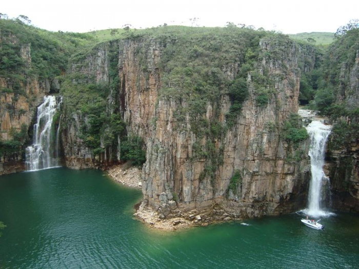

Localização
O Cânion de Furnas, localizado em Minas Gerais, é um verdadeiro espetáculo da natureza. Com suas formações rochosas impressionantes e águas de tonalidade verde-esmeralda, o cânion proporciona uma experiência visual deslumbrante. Navegar pelas águas tranquilas e explorar as falésias imponentes é uma aventura inesquecível. Além disso, o Cânion de Furnas oferece a oportunidade de desfrutar de praias fluviais, praticar esportes aquáticos e apreciar a beleza natural única dessa região. É um destino perfeito para os amantes da natureza e aqueles que buscam paisagens de tirar o fôlego.